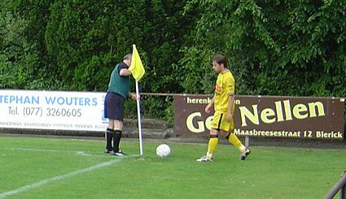
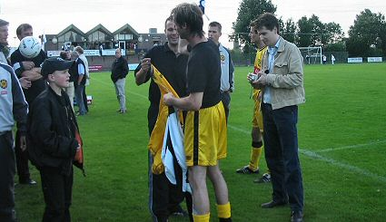

|
SV
Blerick - Roda JC (0-2) 10 juli 2004 |
Dankzij een incomplete routebeschrijving (afslag 13?) verdwaalden
vrijwel alle Rodafans maar ook de spelersbus, rondom en in de straten
van Blerick. Vandaar wellicht de zeer lage opkomst? De fraaie
ouderwetse houten zittribune is dan ook slechts voor de helft gevuld.
Ondanks een fellere start dan afgelopen woensdag tegen Groene Ster
daalde het niveau schrikbarend snel. In tegenstelling tot in
Heerlerheide creëerde men nu echter wel veel kansen maar toch was het
gebraggel soms niet om aan te zien.
Eén van de positieve uitschieters was Mohammed Elberkani die hard
werkte en geregeld voor gevaar zorgde.

Gregoor van Dijk had ruzie met de scheidsrechter en de cornervlag
welke hier door de arbiter wordt teruggeplaatst nadat Gregoor hem
vakkundig had verwijderd.
Ondanks de matige vertoning werd er
toch nog om handtekeningen gevraagd.
De stadionspeaker wenste Roda nog
succes in de naderende Intertoto maar
getuige de 0-2 westrijd in Blerick hoeft
vooralsnog geen enkele Tsjech wakker
te liggen van de mannen van Wiljan
Vloet. Waar blijven die broodnodige
versterkingen??? Tekst en foto's: Marco

Dit is toch ook erg mooi of niet... De speler van SV Blerick vond dat
natuurlijk helemaal toppie.. Ik zie het wel eens bij "grote" wedstrijden
maar dit heb ik nog nooit gezien... Maar het zal natuurlijk wel vaker
voorkomen denk ik zo...
Tekst en foto's: Annemarietje Peters -
Roda Rulez
© Koempels Pleasure Dome
|